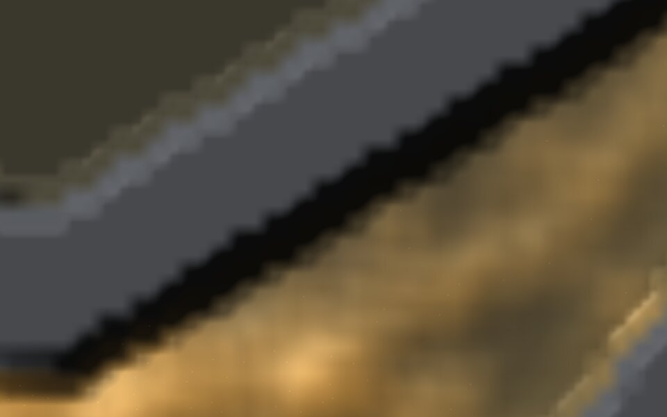
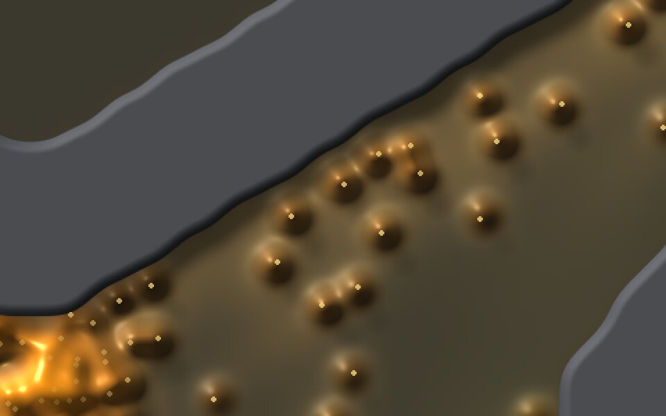
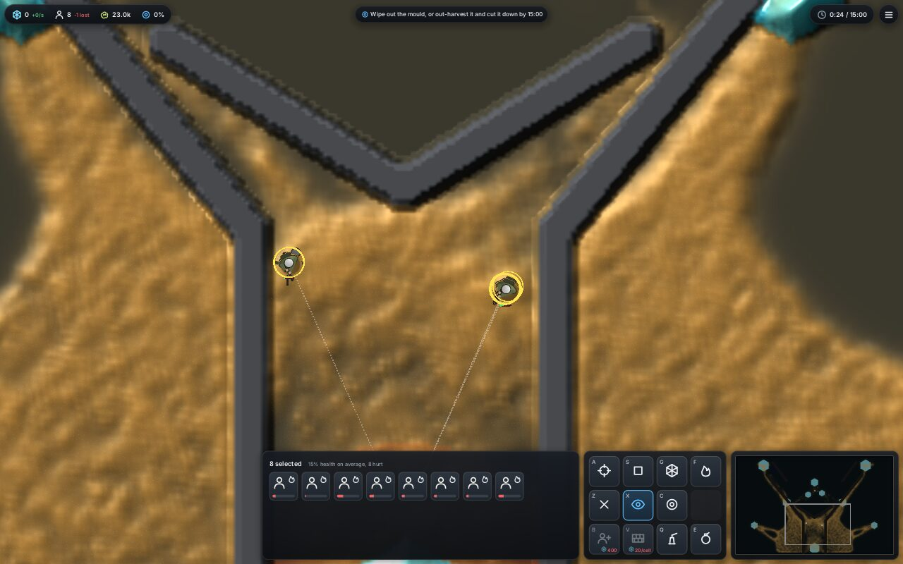
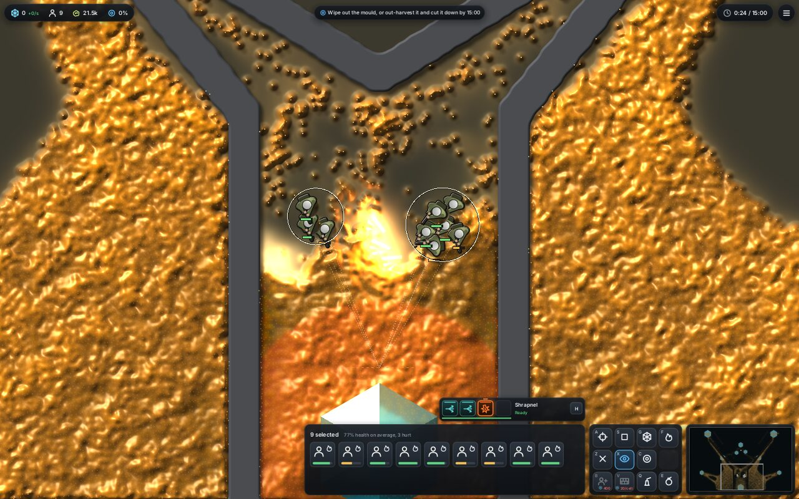
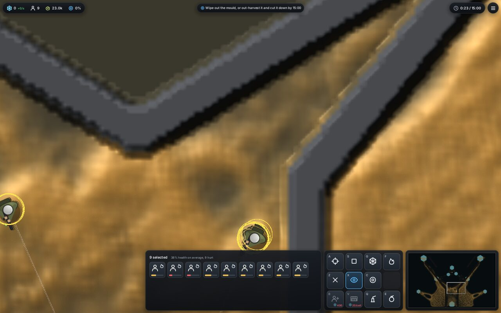
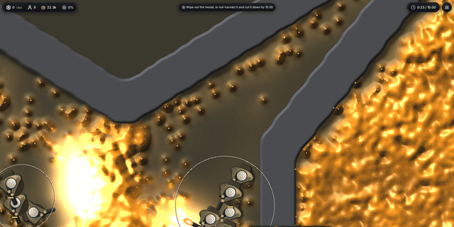
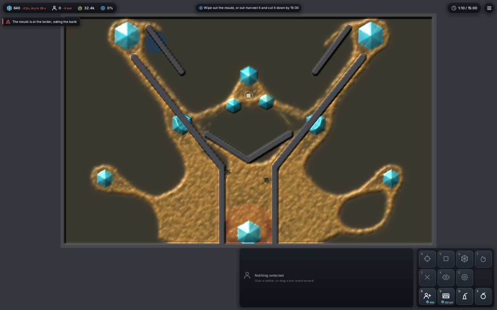
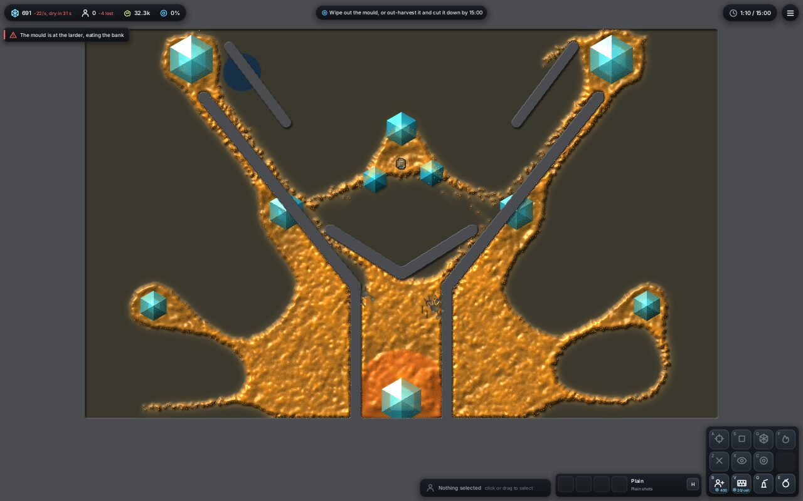
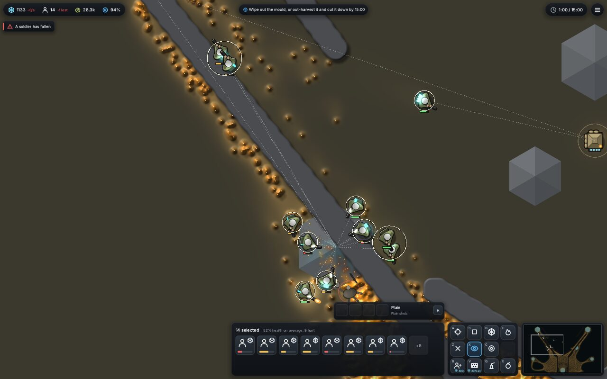
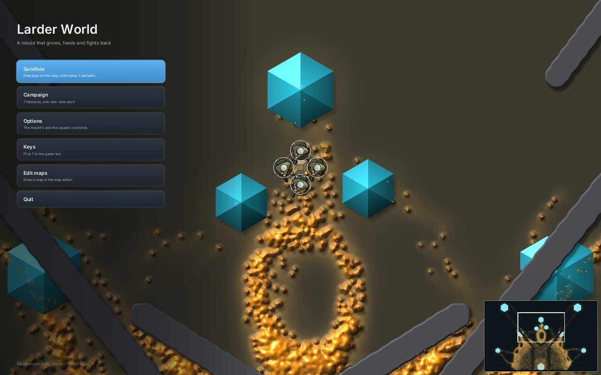

Each shot from the 14 Nov review, re-rendered on main at 68870d0 with the same command, map (Fork), seed and camera. Left is 7df2182, right is today. Software Vulkan, 1280 × 800. The first review.


The slime is sharp at zoom 12, and rock edges are smooth with a short shadow (#241, #228). The cell staircase is gone.


The soldiers are outlined and spread out, with group rings, health only when hurt and a card strip (#227, #232, #233). Within a knot they still overlap a little.


Shots read as light on the slime (#219), and the body is glossy gold with detail in its middle (#241). Two things are new. The thin frontier now reads as pebbles, because each lone walker raises a dome with its own cast shadow. And the dense body's highlights are so fine it looks like crumpled foil. Both go back to the slime thread.


The hexagons and rock are crisp at every zoom. The ground is still one flat olive, and the engine's tints still show as flat discs (blue at top left, orange round the bottom crystal). That's next for the crystals thread.


Carriers glow cyan and the larder lights as it banks (#238), and crystals drain (#228). A spent crystal is now a large flat grey hexagon that reads like a UI block. It should look like worn rock.
| # | Issue | Now |
|---|---|---|
| 1 | Slime out of focus | fixedSharp slime, #241 |
| 2 | Stair-step edges | fixed#228 |
| 3 | Slime reads as sand | mostlyGold and glossy; the frontier reads as pebbles and the body as foil |
| 4 | Shots barely show | fixed#219 |
| 5 | Can't count the squad | fixed#227, #232 |
| 6 | HUD hides the fight | fixed#233: 15% of the screen |
| 7 | Flat ground | openCrystals thread, next |
| 8 | Explosions, gas | landedBomb #225; gas cloud follows |
| 9 | Menu | fixedThrough 1 and 2 |
| 10 | Map editor | to review |